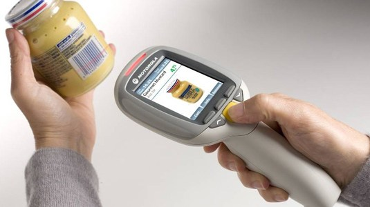
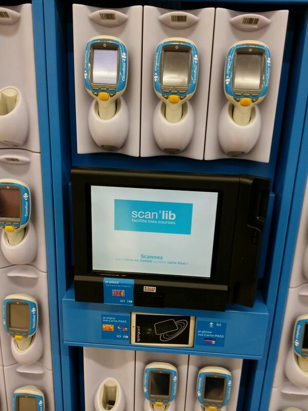
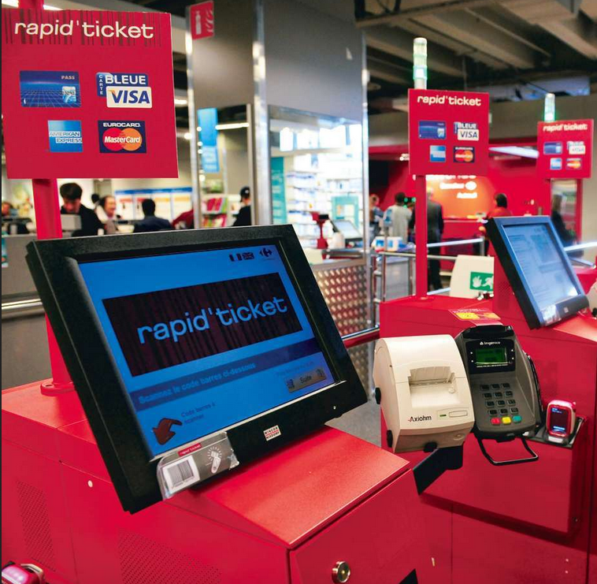
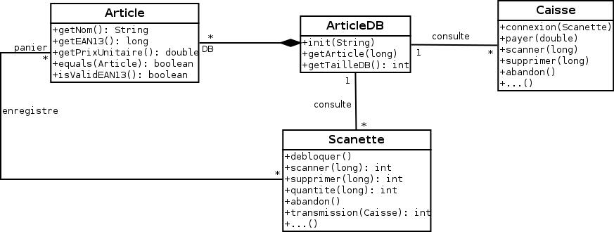
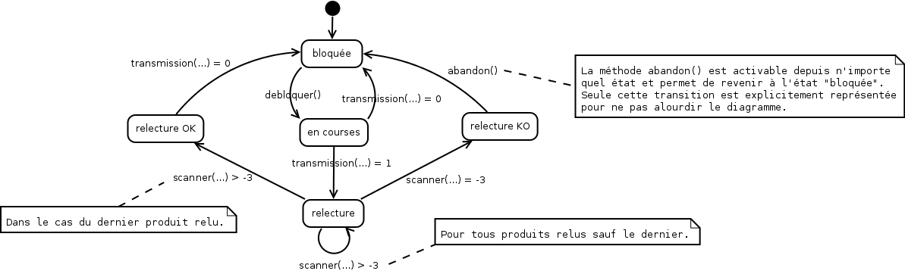
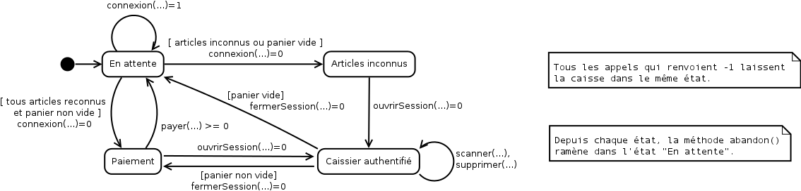

On propose d'étudier un système de scanettes qui permet aux clients des supermarchés de scanner eux-mêmes leurs achats au fur et à mesure de leur visite, et leur permet de passer dans des caisses spécialisées pour le paiement.
 Le processus est le suivant. Le client s'authentifie auprès du système de distribution des scanettes, en donnant son numéro de client, scanné via sa carte de fidélité. Si le numéro est correct, le système lui délivre alors une scannette qui est prête pour enregistrer ses achats. A chaque produit pris dans un rayon par le client, ce dernier doit systématiquement scanner le code barre, ce qui enregistre l'article dans la scannette. Celle-ci affiche toujours sur son écran de contrôle un récapitulatif des produits scannés sous forme compacte, c'est-à-dire le libellé du produit et la quantité correspondante. En cas d'erreur, il est possible de retirer des produits, en appuyant sur la touche "supprimer" et en scannant le produit à supprimer. La suppression, tout comme l'ajout, se fait donc un produit à la fois. Une fois ses courses terminées, le client se présente à une caisse de paiement automatique dédiée au traitement des scanettes.
 Pour valider le traitement les achats, le client scanne alors un code-barre spécial affiché sur la caisse. Ceci déclenche le transfert des informations à la caisse sélectionnée. Si un produit scanné n'a pas été reconnu durant les courses, l'information est retenue dans la scanette et, au moment de la validation des achats, un caissier sera sollicité pour scanner lui-même directement sur la caisse les produits non reconnus. Similairement, il est possible que les codes-barres soient sur une surface trop déformée pour être scannée. La caisse demandera donc systématiquement au client s'il a pu scanner tous ses articles. Si ce n'est pas le cas, un caissier saisira manuellement les codes-barres qui n'ont pas pu être scannés.
Aléatoirement, il est possible qu'une vérification du panier soit réalisée pour "tester" l'honnêteté du client. Un caissier est alors amené à faire la vérification. Ce dernier re-scannera alors, à l'aide de la scanette, un certain nombre de produits (maximum une douzaine) issus du caddie du client. Si cette vérification montre qu'un produit du caddie n'a pas été scanné, alors tout le caddie sera rescanné par le caissier sur une caisse dédiée, ce qui annulera la transaction en cours avec la caisse automatique. Si la vérification n'a décelé aucune erreur, le caissier scannera à nouveau le code barre de la caisse pour valider la phase de vérification.
Une fois les achats validés, le client procède au paiement. Il choisit son mode de paiement (carte bleue ou espèces) et réalise classiquement son paiement : soit il insère sa carte dans le lecteur et tape son code, soit il insère la somme en numéraire dans la caisse et celle-ci lui rendra éventuellement la monnaie, si c'est nécessaire. Une fois ce processus terminé, il peut s'en aller avec ses achats.
Nous présentons ici une description du modèle de données qui sera à réaliser au fil des TP.
Le diagramme de classes considéré sera le suivant.
Le modèle de données est relativement intuitif.
ArticleLes méthodes proposées par la classe Article sont les suivantes :
Article(long, double, String) est un constructeur qui permet d'instancier un article en lui passant en paramètre respectivement son code EAN13 (long), son prix unitaire (double) et son nom (String), String getNom() permet de consulter le nom de l'article, double getPrixUnitaire() permet de consulter le prix unitaire de l'article, long getEAN13() permet de consulter le code EAN13 l'article,boolean isValidEAN13() permet de tester si le code
EAN13 de l'article est valide, boolean equals(Object) permet de vérifier l'égalité entre l'article courant et l'objet passé en
paramètre. On considèrera que deux articles sont égaux s'ils ont le même code EAN13. ArticleDBCette classe utilise la classe Article en permettant la gestion (initialisation, consultation)
d'une "base de données" contenant les références des articles présents en magasin.
Les méthodes proposées par la classe ArticleDB sont les suivantes :
ArticleDB() est le constructeur de la classe, void init(String) permet d'initialiser la base de données des articles avec un
fichier CSV. Ce fichier contiendra un article par ligne, en précisant pour celui-ci,
le code EAN13, suivi du prix unitaire, suivi du nom de l'article. Seules ces 3 informations devront être présentes,
non vides et valides (code EAN correct, prix unitaire positif, nom renseigné), sur chaque ligne. Si le format n'est
pas respecté, une exception FileFormatException (à définir par vos soins) devra être déclenchée et aucun article ne
devra apparaître dans la base (celle-ci ne sera initialisée que si le fichier CSV a pu être lu dans son intégralité
et que les données contenues sont toutes valides). S'il y a une erreur liée à la lecture du fichier une
IOException (native en Java) sera déclenchée. int getTailleDB() renvoie la taille de la base de données.Article getArticle(long) permet de renvoyer l'article dont le code EAN13 est donné en paramètre.
Si l'article n'existe pas dans la base, une exception ArticleNotFoundException (à définir par vos soins) devra être déclenchée. Scanette Les méthodes de le classe Scanette sont les suivantes :
Scanette(String), qui est le constructeur de la classe. Celui-ci prend en paramètre une
chaîne de caractères représentant un chemin vers un fichier initialisant la base de données des articles
à laquelle la scanette se référera. Si le fichier n'existe pas ou s'il n'est pas correctement formatté,
ce constructeur devra déclencher une exception ProductDBFailureException (que vous aurez
également à créer). int debloquer(), qui permet de débloquer la scanette. Si la scanette n'est pas bloquée,
cette méthode renverra le code de retour -1, sinon elle renverra le code de retour
0. int scanner(long), qui permet de scanner un article dont le code EAN13 est passé en paramètre.
Cette méthode est utilisée soit pour ajouter un article dans le panier du client, soit pour effectuer
une relecture si celle-ci est nécessaire. Si l'appel à cette méthode est réalisé alors que la scanette
n'est pas dans le bon état (par exemple parce qu'elle est bloquée) la méthode renverra le code -1.
Si le code EAN13 en paramètre n'est pas reconnu durant les courses, la méthode renverra le code de
retour -2 indiquant
cette erreur. Si la scanette était en cours de relecture et que l'article scanné n'est pas dans le panier
du client, la méthode renverra le code -3. Sinon, elle renverra le code de retour 0 pour
indiquer que l'article a bien été reconnu et que le traitement approprié a bien été réalisé. int supprimer(long), qui permet de retirer un article du panier. Si la scanette n'était pas dans
l'état "en courses", la méthode reverra le code de retour-1. Si le code EAN13 passé en paramètre
n'appartenait pas au panier du client, le code de retour -2 sera renvoyé. Sinon,
la méthode retournera 0 pour indiquer qu'une instance de l'article a bien été supprimée
du panier. int quantite(long), qui permet de connaître, pour le panier actuel, le nombre d'occurrences
d'un article dont le code EAN13 est passé en paramètre. void abandon(), qui permet d'annuler toute transaction en cours et de re-bloquer la scanette. Set<Article> getArticles() qui permet d'obtenir, quel que soit l'état de la scanette,
l'ensemble des articles présents dans le panier du client. Lorsque la scanette est bloquée, cette méthode
renvoie un ensemble vide. Set<Long> getReferencesInconnues() qui permet d'obtenir, quel que soit l'état de la scanette,
l'ensemble des codes EAN non reconnus par la scanette durant les courses. Lorsque la scanette est bloquée,
cette méthode renvoie un ensemble vide. int transmission(Caisse), qui permet de transmettre les informations de la scanette à la caisse.
Si le client a terminé ses achats et qu'au moment de la connexion avec la caisse celle-ci impose une relecture de
contrôle, la scanette passe en mode "relecture" et la méthode retourne le code 1. Si aucune
relecture n'est demandée, ou si la relecture a été effectuée avec succès et a été transmise à la caisse,
la méthode retournera la valeur 0 et la scanette se re-bloquera en attendant le prochain client.
Dans tous les autres cas, la méthode doit renvoyer -1 pour signaler une erreur.
La scanette passe donc par différents états successifs, dont les enchaînements peuvent se synthétiser par le diagramme d'états-transitions ci-dessous.
Caisse Les méthodes proposées par un objet de type Caisse sont les suivantes :
ProductDBFailureException
(que vous avez normalement déjà créé précédemment). int connexion(Scanette), qui permet de réaliser la connexion d'une scanette à la caisse. La spécification
de cette méthode est la même que celle donnée dans le sujet de TP précédent. Cette méthode peut être invoquée par la
scanette : 1. Si aucune relecture n'est décidée, elle
se mettra en attente de paiement, sauf si des articles n'ont pas été reconnus lors des courses ; (dans ce cas, la caisse
sera en attente d'authentification d'un caisser qui prendra le relais pour interroger le client et rescanner manuellement
les éventuels articles manquants, ou même d'autres articles -- on précisera qu'il n'est pas obligatoire qu'un article non
reconnu soit scanné sur la caisse, le client ayant pu le reposer voyant qu'il ne passait pas sur la scanette). La méthode
renverra tout de même, dans les deux cas, la valeur 0 pour signaler à la scanette que les achats ont bien été
transmis, et qu'elle a terminé sa mission.
-1.
boolean demandeRelecture() est une fonction utilitaire (appelée depuis la méthode
connexion précédente) et utilisée pour décider si une relecture doit être effectuée ou pas.
double payer(double), qui permet d'effectuer le paiement. La valeur renvoyée correspond à l'éventuel rendu
monnaie. Une valeur de retour strictement négative indiquera une erreur liée à l'appel de cette méthode alors que la
caisse n'attendait pas de paiement, ou une erreur liée à une tentative de paiement avec un montant insuffisant. void abandon(), qui permet d'abandonner toute transaction en cours avec la caisse, et de la replacer dans
un état où elle attend la connexion de la scanette.
int ouvrirSession(), qui permet à un caissier d'ouvrir une session sur la caisse en vue de pouvoir scanner
des articles ou en supprimer de la liste d'achats du client. La session ne peut être ouverte que si un panier a été transmis
à la caisse et que celle-ci est en attente de paiement ou de saisie d'un article non-reconnu. Si la session a été ouverte,
la méthode renvoie le code 0, sinon elle renvoie le code -1. int fermerSession(), qui permet de fermer la session ouverte précédemment. Cette opération ne peut s'effectuer
avec succès que si une session était actuellement ouverte. Si la fermeture de session réussit, la méthode renvoie le code
0, sinon elle renvoie le code -1. int scanner(long), qui permet à un caissier préalablement authentifié de scanner un article pour l'ajouter
aux achats du client. Le paramètre représente le code EAN13 qui est scanné par l'appareil. Si cette méthode est appelée
alors que la caisse est dans le mauvais état, alors la méthode renverra -1. Si ce code n'est pas reconnu, la méthode
renverra le code de retour -2 indiquant une erreur. Sinon, elle renverra le code de retour 0
pour indiquer que l'article a bien été reconnu et qu'il est ajouté aux achats du client. int supprimer(long), qui permet à un caisser préalablement authentifié de retirer un article de la liste
des achats. Si la méthode est invoquée depuis le mauvais état, elle renverra le code -1. Si le code passé
en paramètre n'appartenait pas aux achats du client, le code de retour -2 sera renvoyé. Sinon, la méthode
retournera 0 pour indiquer qu'une instance de l'article a bien été supprimée du panier. Cas particulier : il n'est pas possible de demander à un client de payer une somme d'argent nulle. Si, après contrôle par le caisser, la liste d'achats du client est vide, alors la caisse ne demande pas de paiement et se remet en attente d'une prochaine connexion de la scanette.
Comme pour la scanette, la caisse possède plusieurs états. Le diagramme d'états-transitions suivant symbolise ces états et le passage de l'un à l'autre.
